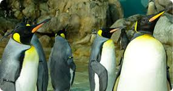
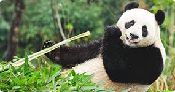
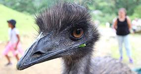

ЖИВОТНЫЕ |
ПИНГВИНЫ |
ПАНДА |
СТРАУС |
| Животные относятся к эукариотам ,Классическими признаками животных считаются гетеротрофность и способность активно передвигаться. Впрочем, существует немало животных, ведущих неподвижный образ жизни, а гетеротрофность свойственна грибам и некоторым растениям-паразитам. |  |  |  |
| Пингви́новые, или пингви́ны (лат. Spheniscidae) — семейство нелетающих морских птиц, единственное современное в отряде пингвинообра́зных (Sphenisciformes). | Па́нда: Большая панда (Ailuropoda melanoleuca) — бамбуковый медведь, одно из редчайших животных, занесённых в международную Красную книгу; .... | Африка́нский стра́ус (лат. Struthio camelus) — бескилевая нелетающая птица, единственный современный представитель семейства страусовых |
РОССИКЙСКАЯ ТЕЛЕПЕРЕДАЧАЯ, ПОСВЯЩЕННАЯ ЗООЛОГИИ И ИССЛЕДОВАНИЯМ ЖИВОТНОГО МИРА
НОВЫЙ ВИД |
РЕСУРСЫ ИНТЕРНЕТА |
ЛЬВИНЫЙ ГИПНОЗ |
ВОЛКИ |
|
Ученые обнаружили новый вид, у которого самцы прирастают к самке буквально всем телом - вот уж поистине любовь на всю жизнь! |
Официальный сайт "В мире животных". Статьи и видео о животных. А ведь у этих животных есть особенности |
Львы мастерски овладели искусством гипноза, а всего один их рык способен держать в страхе всю фауну.Ведь их звонкие голоса ... |
Свирепые и опасные! Вероятно, так отзывается о волках тот, кто ничего о них не знает.Какая стратегия защиты у этих животных? |